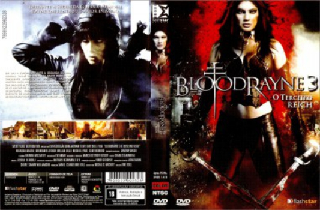

Bloodrayne 3: O Terceiro Reich (2010)


Only the dead survive.

Avaliação (TMDb):


4.1/10 (133 votos)
Avaliação (Usuário):
Outro Título:BloodRayne: The Third Reich
País:Canada, 79 minutos
Idiomas falados:Inglês, Francês, Português
Gênero(s):Ação, Aventura, Fantasia, Terror
Diretor(s):Uwe Boll
Codec:MPEG-2 (DVD)
Número: 794
Sinopse:
Rayne luta contra os nazistas na Europa durante a Segunda Guerra Mundial, encontrando Ekart Brand, um líder nazista cuja meta é injetar em Adolf Hitler o sangue de Rayne, numa tentativa de transformá-lo em uma vampira e alcançar a imortalidade.
Elenco:
Natassia Malthe, Brendan Fletcher, Michael Paré, Clint Howard, Annett Culp, Steffen Mennekes, Dušan Bućan, Arved Birnbaum, Safiya Kaygin, Nik Goldman
Tipo de mídia: DVD5,
Legendas: Português
Alugado: Não
Tela: 2.35:1